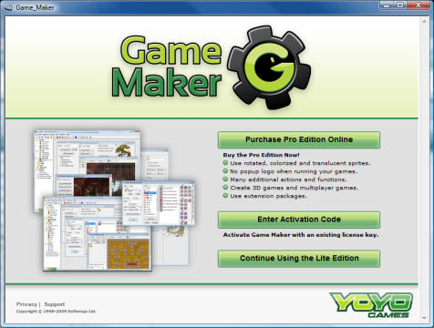

The Lite Edition is meant for those that take their first steps on the path of developing games. It can be used for free but is limited in its functionality. Also it shows a popup logo when running games and will regularly remind you of upgrading the program. When you are using Game Maker regularly you are strongly recommended to upgrade it to the Pro Edition.
The Pro Edition contains considerably more functionality and does not display any logos or popup messages. More precisely, the Pro Edition has the following additional functionality:
Upgrading the Lite Edition to the Pro Edition costs only 20 Euro or US $25 (subject to change). This is a one-time fee that will at least be valid for all versions 8.x of Game Maker.
When you are running the Lite Edition, whenever you start Game Maker the following form will be shown:

You can use this form to upgrade to the Pro Edition. There are a number of ways to do this.
The easiest way is to purchase the upgrade online. To this end press the button Purchase Pro Edition Online. You will be brought to a webpage where you can make you payment either by credit card or through PayPal. The payment will be handled by the company SoftWrap that is our authorized payment processor. Once you made the payment the software will immediately be upgraded to the Pro Edition without any further action from your side. Carefully save (and print) the confirmation you receive as it contains your purchase reference that you might need later if you want to reinstall the software. (When you are running the program, you can also upgrade online by choosing Upgrade to Pro Edition in the Help menu.)
If you purchased Game Maker before (and hence, have an activation code or a previous purchase reference) press the button Enter Activation Code. You will be brought to a webpage where you can either enter your activation code or your purchase reference from your previous payment. Here you can also retrieve your license if you lost it. After you filled in the correct information Game Maker will be upgraded to the Pro Edition. Note that you must have an Internet connection for activation. (When you are running the program, you can also upgrade on line by choosing Enter Activation Code in the Help menu.)
If you don't want to upgrade to the Pro Edition at this stage, press the button Continue Using the Lite Edition.